S&P Macro Regime Strategy
Strategy Overview
This post was adapted from the technical take-home project given by AVM Capital (macro hedge fund) for the Quant Analyst Intern position. The original objective was: given some macroeconomic data of inflation and growth, come up with an ideal hedging strategy for the S&P. After some discussion, this was adapted to: come up with a strategy to beat the benchmark of long S&P by constructing a long-short portfolio consisting of the S&P 500, Gold, and US10Y treasury bonds.
The data given to me was daily close of S&P, quarterly close of Gold, daily yields of US10Y bonds, quarterly GDP YoY change figures and monthly CPI YoY change figures, from 1970 to 2020. Thus, my strategy was to rebalance the portfolio quarterly based on the current regime the quarter was in, determined by whether growth or inflation was rising/falling from the previous quarter. The in-sample period is from 1970 to 2012 and the out-sample period is from 2013-2020. I then evaluate the out-sample performance based on the rolling Sharpe, rolling information ratio and tracking error.
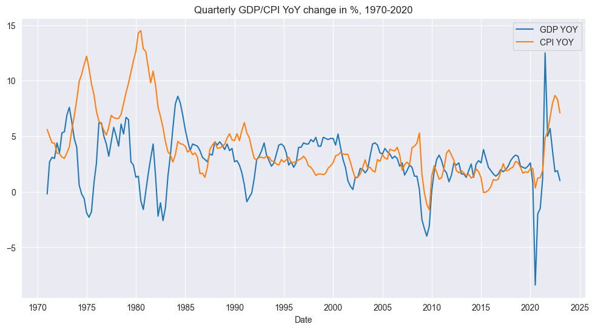
Regimes
First, we create quarterly log returns:
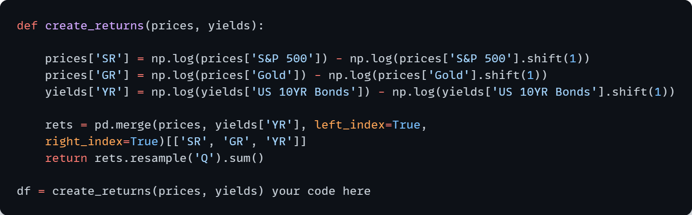
Next, given the CPI and GDP data, we can classify any period in this time horizon into whether it has rising or falling growth or inflation relative to the previous year. We categorize an indicator as rising if it is greater than the previous quarter and falling if it is lesser than the previous quarters values. Thus, this gives us very simplistic categories:
- Bearish - Falling growth, falling inflation
- Stagflation - Falling growth, rising inflation
- Bullish - Rising growth, falling inflation
- Overheating - Rising growth, rising inflation
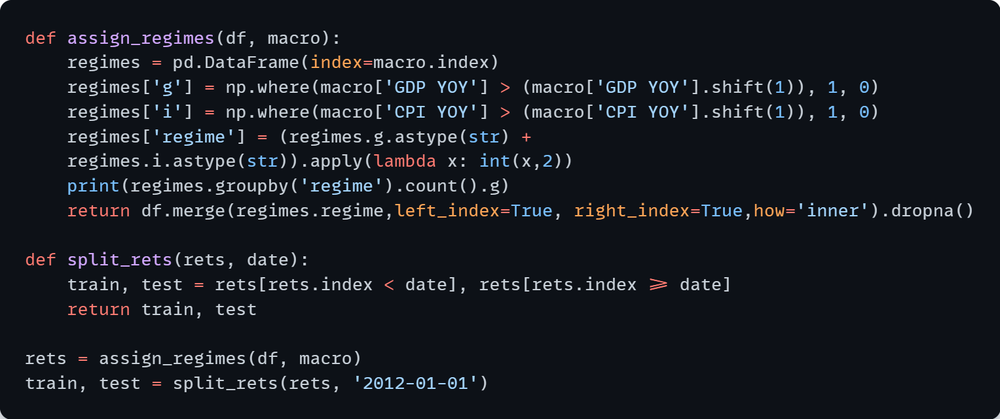
Signal
The strategy emits 4 fixed alphas (one for each regime) which are normalized so their absolute values sum to unity for long/short portfolio weights to take in each regime. The alpha vectors are naively created from normalizing the Sharpe ratio of the returns during each regime (for all time periods) on the training data.
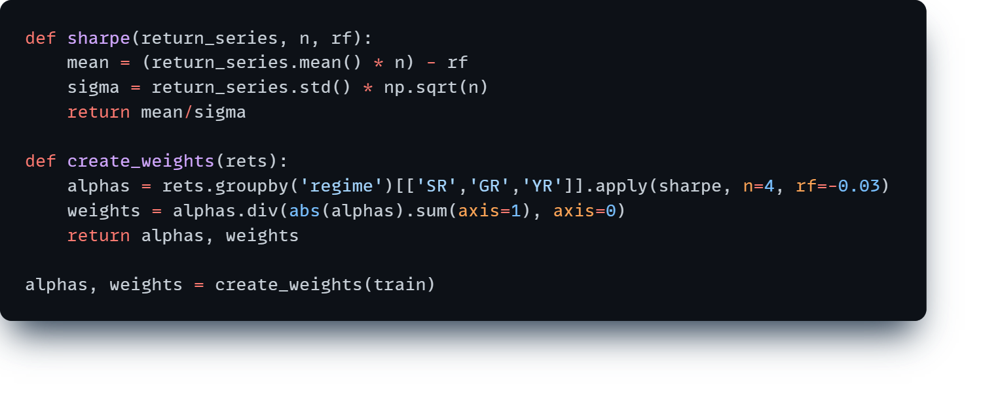This is a simple method of creating an alpha that uses a summary statistic (Sharpe) of returns for each regime. However, the returns of each regime are not contiguous, because the regimes switch every quarter or so. An alternative method would be MVO, but will stick with the former. The barchart shows the portfolio allocation in each regime.
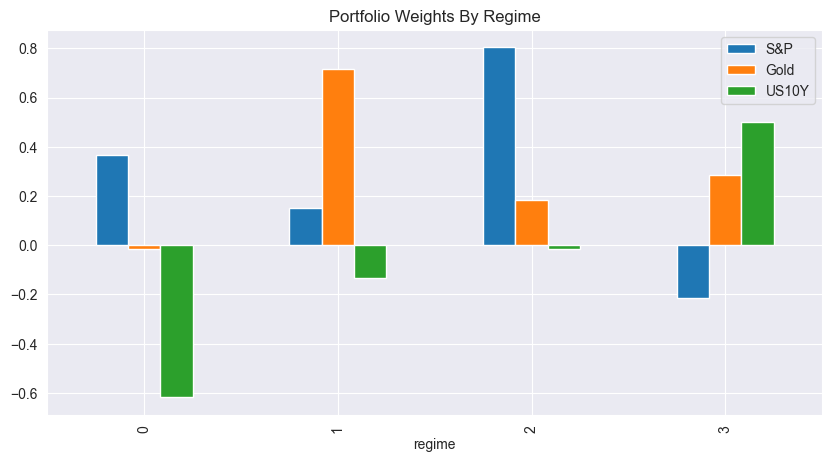
Performance
Once we compute the return series for our strategy, we can compare the performance to long S&P only. Since the signal is fixed (4 alpha vectors), there is no quantile analysis or other diagnostics.
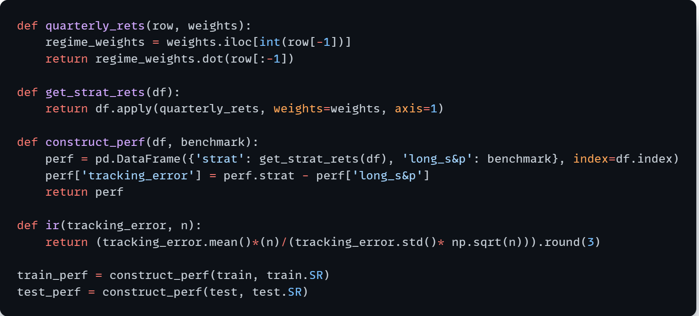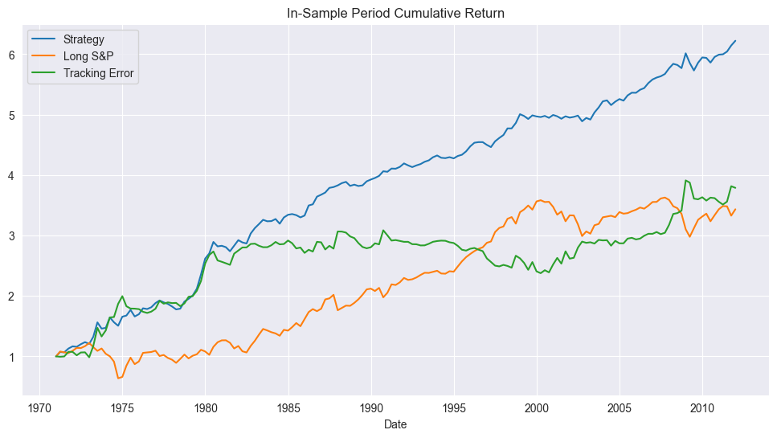
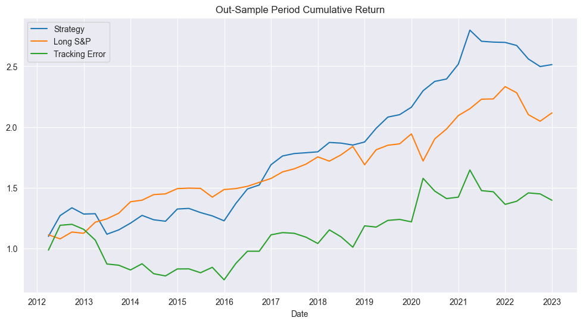
Unfortunately, the strategy does overfit. While overall cumulative returns for both in-sample and out-sample period does beat the S&P, the tracking error plots show many instances where it had lesser returns than the market index.
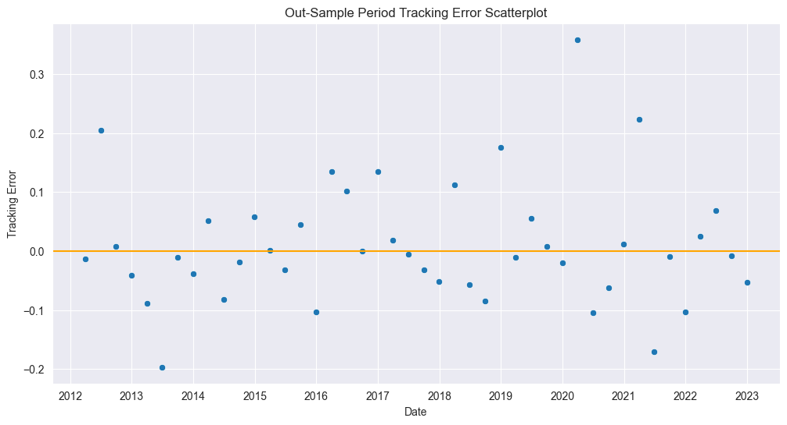
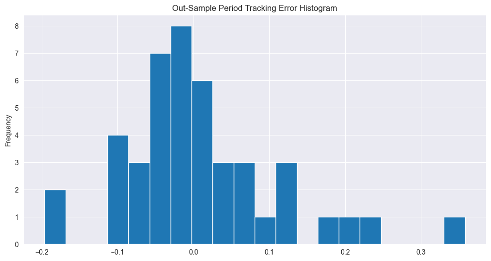
Looking at the out-sample 1Y rolling information ratio and Sharpe ratio, we see more evidence of the strategy failing to perform in the Covid era and beyond, showing a decrease in 2020 onwards with a slight positive upturn at the end of the out-sample period (mid 2022). Thus, it seems like a case of overfitting.
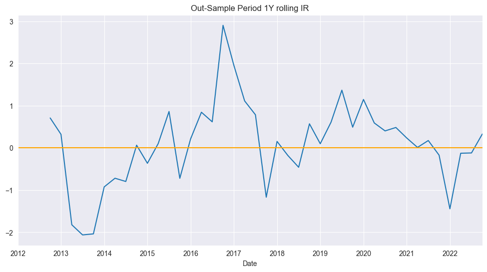
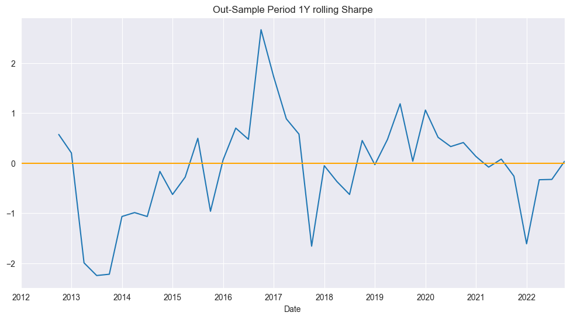
Conclusion
Unfortunately, the strategy seems to be very naive and underperforms with negative rolling IR and Sharpe towards the end of the out-sample period due to overfitting. Also, the method of classifying regimes is simple and naive.
However, this was a good exercise in getting my hands dirty with some financial data and playing around. Furthermore, it was made aware to me that my strategy had lookahead bias, as the quarterly GDP/CPI YoY figures were usually released after a quarter had already started. Thus, I was prompted that possibly lookahead macro indicators could be used as proxies of inflation and growth.
Unfortunately, they were looking for a graduate student (e.g MFE) for a 6 months internship, and I had already graduated only recently. However, they did mention the methodology was sound.